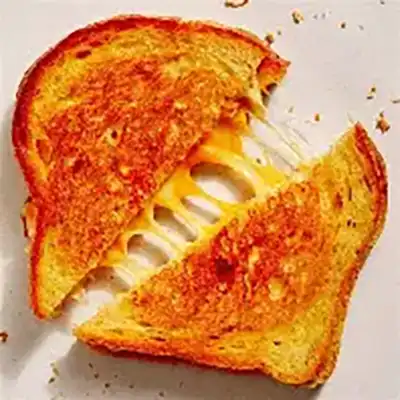

Our Favorite Recipes
Classic Grilled Cheese Sandwich

This classic grilled cheese is quick, easy, and perfect for any meal. It uses simple ingredients and takes only minutes to prepare.
Tip: Using butter instead of oil gives the sandwich a richer flavor.
Serve with soup for a complete meal.
Ingredients
- Bread slices
- Cheese
- Butter
Instructions
- Butter one side of each slice of bread
- Place cheese between the unbuttered sides
- Cook in a pan until golden brown on both sides
Cooking Terms
- Sauté
- To cook food quickly in a small amount of fat.
- Simmer
- To cook just below boiling.
- Grill
- To cook food using direct heat.
123 Kitchen Lane
Food City, USA
Phone: (800) 555-1234
Learn more about cooking: